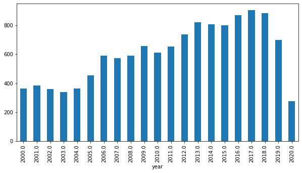
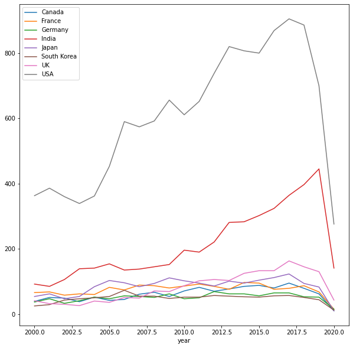

Data Science Foundations
Lab 1: Data Hunt I¶
Instructor: Wesley Beckner
Contact: wesleybeckner@gmail.com
That's right you heard correctly. It's a data hunt.
import pandas as pd
import matplotlib.pyplot as plt
import seaborn as sns
from ipywidgets import interact
df = pd.read_csv("https://raw.githubusercontent.com/wesleybeckner/"\
"technology_explorers/main/assets/imdb_movies.csv")
# converting years to numbers for easy conditionals
df['year'] = pd.to_numeric(df['year'], errors='coerce')
df.shape
/home/wbeckner/anaconda3/envs/py39/lib/python3.9/site-packages/IPython/core/interactiveshell.py:3251: DtypeWarning: Columns (3) have mixed types.Specify dtype option on import or set low_memory=False.
exec(code_obj, self.user_global_ns, self.user_ns)
(85855, 22)
df.head(3)
| imdb_title_id | title | original_title | year | date_published | genre | duration | country | language | director | ... | actors | description | avg_vote | votes | budget | usa_gross_income | worlwide_gross_income | metascore | reviews_from_users | reviews_from_critics | |
|---|---|---|---|---|---|---|---|---|---|---|---|---|---|---|---|---|---|---|---|---|---|
| 0 | tt0000009 | Miss Jerry | Miss Jerry | 1894.0 | 1894-10-09 | Romance | 45 | USA | None | Alexander Black | ... | Blanche Bayliss, William Courtenay, Chauncey D... | The adventures of a female reporter in the 1890s. | 5.9 | 154 | NaN | NaN | NaN | NaN | 1.0 | 2.0 |
| 1 | tt0000574 | The Story of the Kelly Gang | The Story of the Kelly Gang | 1906.0 | 1906-12-26 | Biography, Crime, Drama | 70 | Australia | None | Charles Tait | ... | Elizabeth Tait, John Tait, Norman Campbell, Be... | True story of notorious Australian outlaw Ned ... | 6.1 | 589 | $ 2250 | NaN | NaN | NaN | 7.0 | 7.0 |
| 2 | tt0001892 | Den sorte drøm | Den sorte drøm | 1911.0 | 1911-08-19 | Drama | 53 | Germany, Denmark | NaN | Urban Gad | ... | Asta Nielsen, Valdemar Psilander, Gunnar Helse... | Two men of high rank are both wooing the beaut... | 5.8 | 188 | NaN | NaN | NaN | NaN | 5.0 | 2.0 |
3 rows × 22 columns
🎥 L1 Q1 What american director has the highest mean avg_vote?¶
director
Daniel Keith, Snorri Sturluson 9.3
Anthony Bawn 9.3
Derek Ahonen 9.2
Raghav Peri 9.1
James Marlowe 8.8
...
Waleed Bedour 1.2
Fred Ashman 1.1
Aeneas Middleton 1.1
Steven A. Sandt 1.1
Francis Hamada 1.1
Name: avg_vote, Length: 12463, dtype: float64
🎥 L1 Q2 What american director with more than 5 movies, has the highest mean avg_vote?¶
director
Quentin Tarantino 7.811111
Charles Chaplin 7.764286
David Fincher 7.625000
Billy Wilder 7.580952
Martin Scorsese 7.544444
...
Barry Mahon 2.728571
Dennis Devine 2.657143
Bill Zebub 2.483333
Mark Polonia 2.462500
Christopher Forbes 2.000000
Name: avg_vote, Length: 859, dtype: float64
🎥 L1 Q3 What director has the largest variance in avg_vote?¶
director
Deniz Denizciler 4.030509
Rudi Lagemann 3.747666
Emilio Ruiz Barrachina 3.676955
Krishna Ghattamaneni 3.676955
Milos Avramovic 3.606245
...
Ümit Degirmenci NaN
Ümit Elçi NaN
Ümit Köreken NaN
Þorsteinn Gunnar Bjarnason NaN
Þórhildur Þorleifsdóttir NaN
Name: avg_vote, Length: 34733, dtype: float64
🎥 L1 Q4 What director with more than 10 movies has the largest variance in avg_vote?¶
director
Harry Baweja 1.869954
Shaji Kailas 1.854502
Zdenek Troska 1.775984
Adam Rifkin 1.711251
Ram Gopal Varma 1.687850
...
Ford Beebe 0.224343
Ray Nazarro 0.210311
Jean Grémillon 0.196946
Louis Feuillade 0.156428
Tsutomu Shibayama 0.126121
Name: avg_vote, Length: 1135, dtype: float64
🎥 L1 Q5 What american directors with more than 5 movies have the largest variance in avg_vote?¶
director
Martin Brest 2.033716
David Winters 1.926049
Adam Rifkin 1.711251
Gus Trikonis 1.661271
Jerry Jameson 1.646107
...
Edward Killy 0.155265
Willis Goldbeck 0.139443
Richard T. Heffron 0.136626
Bill Plympton 0.136626
Nate Watt 0.129099
Name: avg_vote, Length: 859, dtype: float64
🎥 L1 Q6 Where does M. Night Shyamalan fall on this rank scale?¶
(He's number 36/859)
what happens when you only include directors who, on average (based on mean), have made most their movies after 1990 and have produced 10 or more movies?
(Shyamalan rises to 3/83)
🎥 L1 Q7 How many movies were made each year in US from 2000-2020¶
year
2000.0 363
2001.0 386
2002.0 360
2003.0 339
2004.0 362
2005.0 453
2006.0 590
2007.0 574
2008.0 592
2009.0 656
2010.0 611
2011.0 652
2012.0 738
2013.0 820
2014.0 807
2015.0 800
2016.0 869
2017.0 905
2018.0 886
2019.0 700
2020.0 276
Name: title, dtype: int64
🎥 L1 Q8 Visualize The Results of Q7!¶
<matplotlib.axes._subplots.AxesSubplot at 0x7fea042dc890>

🎥 L1 Q9 For single country movies, how many movies were made each year in each country from 2000-2020, only include countries that made more than 1000 movies in that timeframe¶
| country | year | title | |
|---|---|---|---|
| 0 | Canada | 2000.0 | 39 |
| 1 | Canada | 2001.0 | 51 |
| 2 | Canada | 2002.0 | 49 |
| 3 | Canada | 2003.0 | 38 |
| 4 | Canada | 2004.0 | 52 |
🎥 L1 Q10 Visualize the results from Q9!¶
